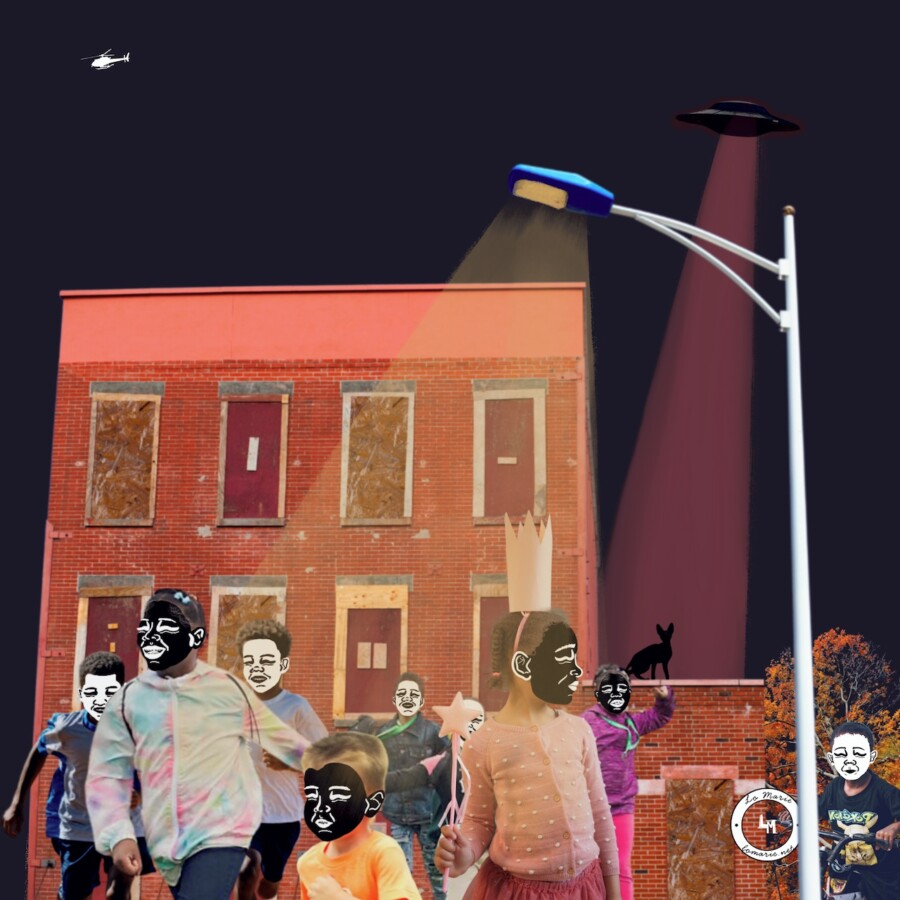

Lo Marie: Windy City Tells
“Windy City Tells” is a collection of collage works by artist Lo Marie, that examine social issues within Chicago’s communities. Exploring themes of wealth disparity, racism and exploitation, Lo Marie creates visual narratives that are rooted in the lived experiences of Chicago residents and highlights the communities that are impacted by systemic inequalities. The exhibition’s title and concept are an extension of the Windy City Tells (WCT) e-zine series that the artist started in 2024 and distributes online every few months. Much like the e-zine, the works in this exhibition depict scenes in Chicago neighborhoods along with current events and pop culture. Lo Marie’s goal is to shed light on the issues of economic disparity while highlighting the beauty of the people in this city – thus fostering reflection and dialogue among viewers.